하단 SAM 무장·발수 선택, 측정 사거리 링, 표적 교전 탭을 메인 지도와 PiP에 추가했습니다. 비행·유도·센서·신관·기존 발사 관문과 사거리표는 보존했습니다.
유효는 초록, 사각지대·최대 사거리 구간·최소 유효거리 안쪽은 주황 경고로 발사 가능. 기존 관문 거부·최대 사거리 밖·판정 불가·트랙 소실은 빨강으로 차단합니다. 기존 물리적 최소거리 제한은 그대로입니다.
브랜치 map-b · main 병합/release/tag 없음. 전체 보고서 · 검수 원문 · 변경 diff · 입력 감사
게임 HTML SHA-256: 6dfac8a6e846bc6476619d721d5113fdc638f309ef5ba0b568e0526010ed8c42
| 항목 | 결과 |
|---|---|
| 도메인 회귀 | 420 / 420 |
| 기존 UI | 88 / 88 |
| MAP_B | 91 / 91 |
| 경고 상태 검수 | 23 / 23 · 실제 발사 6 / 6 |
| 추가 UI·실제 WebGL PiP | 13 / 13 |
| 종료기 회귀 | 300발 · 결과 차이 0 · 새 실패 0 |
| 자연 탐지→정식 VLS→실제 WebGL | 8발 / 29검사 · 기존 결과 동일 |
| 120초 무표적·전투 truth hash | CLEAN_B와 동일 |
| 비행 함수 지문 | 281개 동일 |
| 사거리표 | schema3 / 120행 / byte 동일 / match:true |
자연 발사 8발의 명중은 기존과 같은 4/8입니다. 기존 SM-6/ESSM 비명중 4발은 UI 작업에서 수정하지 않았습니다. 장시간 비행 회귀는 실행한 중간 HTML SHA를 원문에 남겼으며, 최종 파일의 동일 비행 지문과 현재 코어·UI·상태 해시를 별도로 검증했습니다.
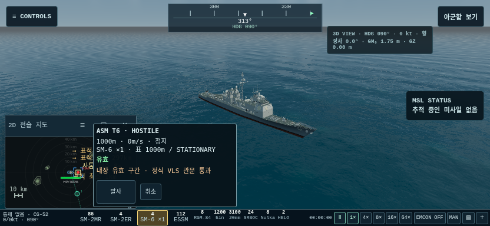
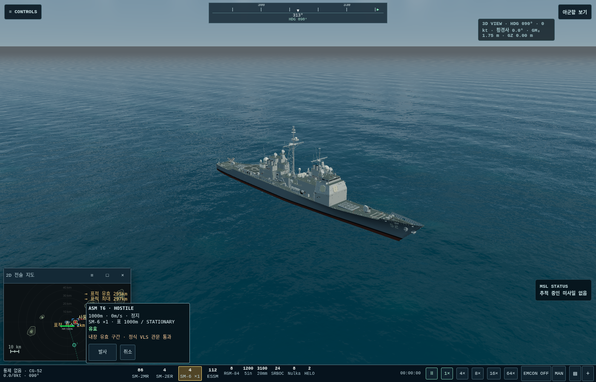
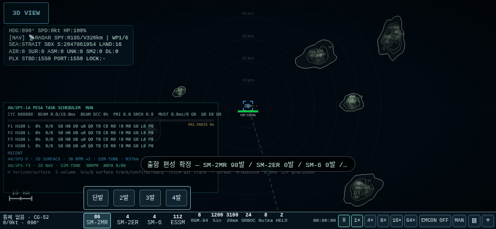
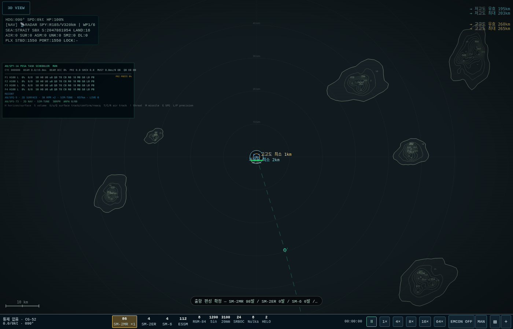
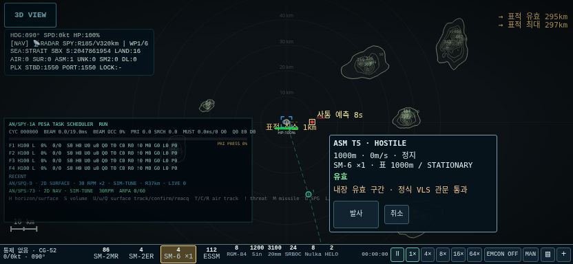
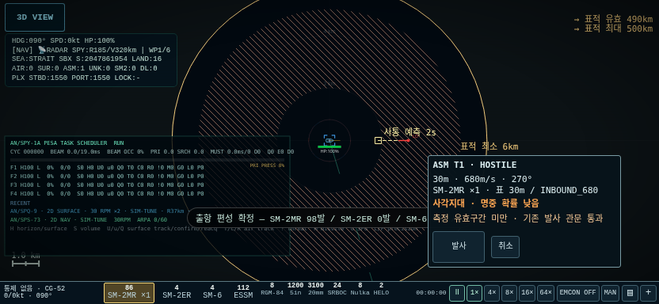
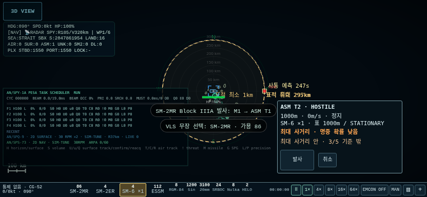
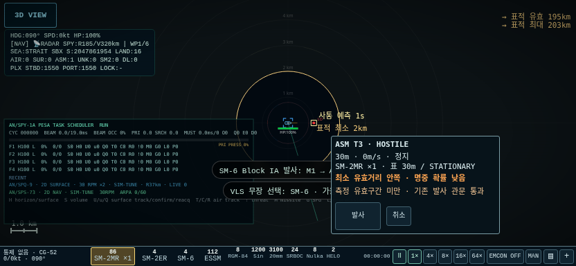
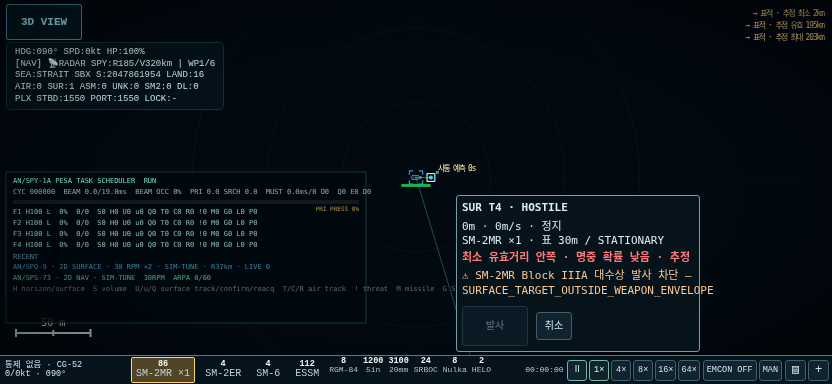
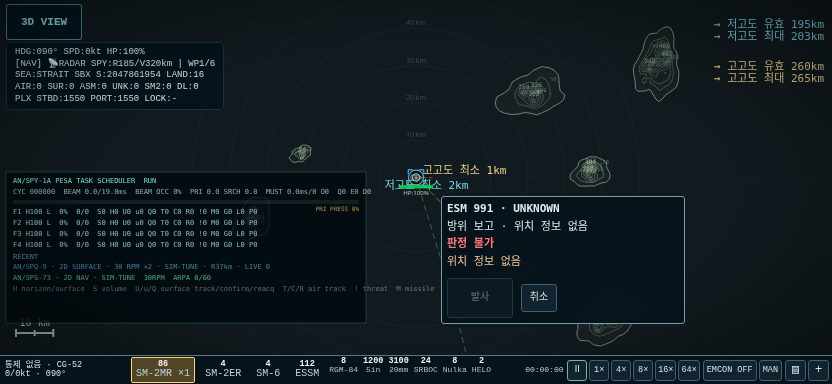
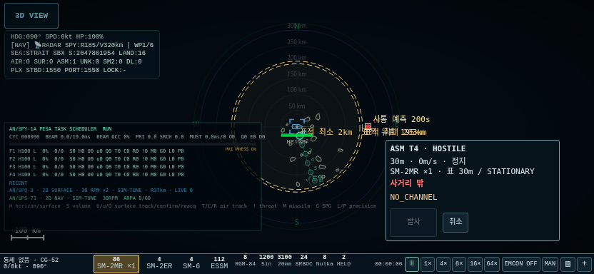
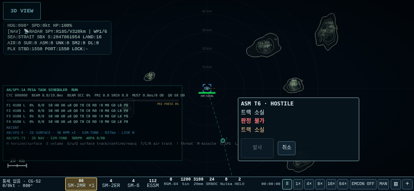
# MAP_B — 무장 선택·사거리 링·표적 교전 기준은 `clean-b`의 `Aegis_SIM_v48_WIP_CLEAN_B.html`(SHA-256 `ab614891a44f05addc20aed8ac0822da1b997bc766478f2cc1ba3dc76d70fef8`)이다. 작업 브랜치는 `map-b`. main 병합, release, tag를 만들지 않았다. 결과물은 `Aegis_SIM_v48_WIP_MAP_B.html`이며, HTML 1개를 담은 ZIP과 이 보고서·검증 자료를 담은 ZIP을 따로 제공한다. ## 1. 변경과 판정 방식 하단 SAM 재고에서 무장과 단발/2/3/4발을 고른다. 다른 무장의 발수 확정 전까지 이전 선택을 유지한다. 선택 무장을 다시 누르거나 바의 빈 곳을 누르면 해제된다. 배속·EMCON·교전 모드·창 버튼은 선택을 바꾸지 않는다. 설치 재고 표시는 기존 공급원을 사용하며, 발수 버튼은 실제 사용 가능한 준비 탄수를 기준으로 비활성화한다. 메뉴가 열린 동안 탄수가 변해도 갱신한다. 선택 뒤 자함 중심 링이 표시되고, 표시 트랙을 탭하면 표적 옆 교전 탭으로 전환된다. 메인과 PiP는 같은 선택·표적 슬롯과 렌더 함수를 사용한다. 탭/겹침 후보/롱프레스/우클릭의 MAP_A 해석은 그대로 유지한다. 메뉴의 명시적 ‘정보 보기’도 유지한다. 취소는 표적만 해제하고 무장은 남긴다. 발사 후에도 선택을 유지한다. ### 구현 전에 보고한 조회 방식 - 내장 `AEGIS_ENVELOPE_TABLE_D_3`, 120행의 `maxRangeKm`, `effectiveMinKm`, `effectiveMaxKm`, `deadZones`를 읽는다. 내장 표와 과거 측정 이력은 바이트 동일하게 보존했다. - 처음 링: **저고도 30m / 고고도 15,000m**, 모두 정지 표적 행. 짧은 점선/긴 점선, 색과 라벨로 구별한다. 최소는 실선, 유효 구간은 안팎 경계와 옅은 채움, 최대는 얇은 점선이다. 화면 밖 큰 원은 방향 화살표·거리 라벨을 남긴다. - 표적 링: 관측 고도에 가장 가까운 측정 고도 행, 관측 속도의 시선 방향 접근/이탈 성분과 횡방향 성분에 가장 가까운 측정 운동 행을 고른다. 보간·새 비행식·새 물리 계수는 없다. 정확히 측정한 조건이 아니거나 자함이 이동하면 ‘추정’을 표시한다. - 고도 미상: 선택 무장/운동의 행 중 유효 최대거리가 가장 작은 고도 행을 보수적으로 사용하고, ‘고도 미상’을 함께 표시한다. SPQ/항해 레이더/Hawklink 등의 2D 높이를 실제 3D 관측 고도로 간주하지 않는다. - 예측점과 표적→예측점 선: 기존 `hardKillKinematicInterceptEstimate`, `wip118FutureThreat`, `wip118TrackAcceleration`을 관측 사본에 적용한다. 실제 적 좌표를 사용하지 않는다. 이는 기존 사통의 계획 예측이며, 미사일의 숨겨진 실제 미래 위치를 표시하지 않는다. - Link 16 수신 파일도 제공된 위치·속도로 링을 조회한다. 로컬 사통 트랙이 없으면 이를 만들어내지 않고 `NO_TRACK`으로 발사를 차단한다. ESM 방위만 있으면 처음 링을 유지하고 ‘판정 불가: 위치 정보 없음’으로 표시한다. ### 사용자 추가 지시 반영: 최소 유효거리와 사각지대는 경고 초기 구현 전 보고의 ‘표 기반 최소거리 차단’은 **사용자의 추가 지시로 폐기**했다. 최종 동작은 다음과 같다. | 상태 | 색 | 발사 | |---|---|---| | 유효 구간 | 초록 | 기존 관문 통과 시 허용 | | 사각지대 · 명중 확률 낮음 | 주황 | 기존 관문 통과 시 허용 | | 최대 사거리 · 명중 확률 낮음 | 주황 | 기존 관문 통과 시 허용 | | 최소 유효거리 안쪽 · 명중 확률 낮음 | 주황 | 기존 관문 통과 시 허용 | | 최대 사거리 밖 / 판정 불가 / 트랙 소실 | 빨강 | 차단 | | 기존 관문 거부(EMCON, 식별, 품질, 셀·손상, 조사기, 주기 등) | 빨강 | 기존 사유로 차단 | 표의 최소 **유효**거리를 물리적 최소 발사거리로 사용하지 않는다. 기존 관문에 들어 있는 대수상 물리적 최소거리 제한은 보존한다. `otherRuns`는 새 유효 링으로 승격하지 않으며, `deadZones`는 표에 기록된 구간 그대로 빗금으로 그린다. ‘명중 확률 낮음’은 측정 유효 구간 밖이라는 경고이며 새로운 확률값을 계산한 것이 아니다. ### 기존 발사 권한 보존 UI 미리보기에서 실제 트랙의 품질·식별 캐시를 수정하지 않도록, 기존 관문의 원문과 발사 직전까지의 prefix를 **관측·자함 상태 사본** 안에서 실행한다. 원문 해시와 중단 위치는 `native-preview-ledger.json`에 있다. 탄 소모·spawn·예약 확정 이전에 중단하며, 원본 관문은 수정하지 않았다. [발사]만 실제 대상 슬롯을 명시적으로 바인딩한 뒤 `wip13cSelectVlsWeapon` → `wip13cFireSelectedVlsWeapon` → 정식 VLS 경로를 호출한다. 후속 발사는 렌더가 아닌 fixed tick의 운용자 명령 큐에서 기존 `nextStep`에 맞춰 호출한다. 기본 48틱=0.8초를 유지하며 각 발 직전에 다시 검사한다. 관측·권한·탄수·장비 조건이 달라지면 남은 요청은 중지한다. 반자동에서는 선택한 무장/표적에 대한 기존 권고가 필요하고, 새 권고가 다른 대상으로 바뀌어도 다른 무장/표적을 대신 쏘지 못하게 UI 선택 일치 검사를 둔다. 기존 `simulateFixedTick` 선언은 보존하고 명령 큐 디스패치 어댑터로 감쌌다. 대기 명령이 없으면 원래 tick만 실행한다. 렌더 함수에서 발사하거나 시뮬 상태를 쓰지 않는다. UI 선택/발수/표적/큐는 게임 저장 스키마에 추가하지 않았다. ## 2. 검수 M1–M9 자동 집계 원문은 `evidence/acceptance.json`에 있다. 세부 검사는 JSON과 실행 로그로 함께 제공한다. | 항목 | 결과·수치 | 근거 | |---|---|---| | M1 | 무장·발수 확정/보류/변경, 재클릭·빈 바 해제, 다른 바 버튼 비간섭, 탄 부족·0탄 처리 통과 | MAP_B 91검사 | | M2 | 초기 2세트 → 표적 1세트 → 취소 시 2세트, 무장 변경 시 표적 유지 | MAP_B 91검사 및 스크린샷 | | M3 | 판정 6종 재현. 경고 3종×PC/폰에서 발사 활성·주황 표시·정식 VLS 발사 **6/6** | 경고 23검사, `warnings.json` | | M4 | 고도 미상·추정, ESM 위치 없음, 트랙 소실·발사 비활성 통과 | MAP_B 91검사 | | M5 | 각 화면에서 1/2/3/4발 실제 VLS 기록, 간격 ≥48틱. SM-2MR/SM-2ER/ESSM도 2발씩 추가 검증 | MAP_B/추가 검증 로그 | | M6 | 메인·PiP 동일 선택/발사, 실제 WebGL 배경에서 PiP 조작 확인 | 추가 13검사와 실제 3D 스크린샷 | | M7 | 각 크기에서 선택·조회 200회 후 실제 락/PD/EMCON/트랙/탄수/RNG/틱 변화 0. 미리보기 전후 동일 | `extra.json`, `data-sources.json` | | M8 | 도메인 **420/420**, 기존 UI **88/88**, 종료기 **300발** 결과 동일, 자연 탐지→정식 VLS→실제 WebGL **8발/29검사** | 도메인·UI·300발·8발 원문 | | M9 | 1400×900, 832×384에서 패널 화면 안, FIRE ≥40px·간격 ≥8px, 기존 보존 대상 노드 연결·중복 id 0 | MAP_B 91검사와 캡처 | ### 회귀의 실제 의미 종료기 300발은 기존 222성공→222성공이다. 성공→실패 0, 종료 사유·시간·최근접거리·신관 거리·최종 상태의 차이 0이다. 기존 실패를 ‘통과’로 바꿔 세지 않았다. 자연 관측 8발은 8발 모두 실제 센서 트랙과 정식 발사 기록, 비행 후 실제 WebGL 프레임 진행을 확인했다. 명중은 기존과 같이 SM-2MR/SM-2ER의 ON/OFF 합계 4발이며, SM-6/ESSM의 기존 비명중 4발은 고치지 않았다. 이 UI 작업으로 8발 모두 명중했다고 주장하지 않는다. 120초 무표적 truth 해시: `fb1fac63054a72db26cce4b4f4781288a7f07a28465ce5ac2aa5597760adffbc`. 120초 전투 truth 해시: `b7d28c54e141aff3cd3353b5ee6f02ee2fe633f825c5c5814f79b9c83779e8f1`. 둘 다 CLEAN_B와 동일하다. 비행 관련 내장 지문 **281개** 변경 0, 기존 최상위 함수·상수 **3,776개** byte 동일. 바뀐 기존 함수는 지도 링 draw hook과 명시적 INFO 정밀추적 UI 어댑터이며, 임시 커서 연결 함수 1개를 제거했다. ENVELOPE_TABLE_D와 저장 스키마는 변경하지 않았다. `__ENV_D__.status()`는 같은 표/프로파일 해시와 `match:true`를 반환한다. UI 작업 중 중간 산출물에서 긴 회귀를 먼저 돌렸고, 마지막 UI 경고/수신정보 표시 보정 뒤 관련 UI 검사·정식 경고 발사·동등성 검사·현재 코어에 고정한 paired 회귀를 확인했다. 각 결과 JSON에는 실제 시험한 HTML SHA가 기록되어 있다. 서로 다른 중간 HTML을 최종 HTML과 바이트 동일하다고 표시하지 않았다. 비행 원문 지문/상수의 동등성은 최종 파일에서 별도 검증했다. ### 기존 시험 이관 - UI 88검사의 비교 조건은 유지했다. 제거된 ‘조회→커서 이동→LOCK’ 준비 과정만 기존 명시적 `mapPrecisionCommandA`를 호출하는 test-only 어댑터로 바꿨다. 실제 UI 정밀추적 버튼도 별도 시험했다. 락 상태를 직접 쓰는 대체 setter는 쓰지 않았다. - EMCON UI 14검사는 삭제된 3D quick 버튼을 찾던 부분만 교체했다. 기존 ARM AUTO/LOCK/FIRE와 비방사 지정 검사는 그대로 실행한다. 새 MAP_B FIRE가 EMCON에서 비활성이고 미사일이 늘지 않는지도 검사했다. - DDG 3+CG 3의 승인된 raid 기대 상태는 그대로 유지했다. 현재 UI 코어 해시에 guard를 다시 고정했으며 새 기대값을 만들지 않았다. - 실행 중 발견한 시험 준비 문제(숨겨진 옛 탭, 작은 PiP의 후보 목록, 이상 관측을 유지하지 않아 큐가 사통 품질로 정상 중단되는 경우, ESSM의 10km가 표의 최소 유효거리보다 가까운 경우)는 준비 경로를 고쳤다. 비행·관문을 완화하거나 검사 항목을 삭제하지 않았다. 사각지대 차단 변경은 시험 통과용 수정이 아니라 사용자의 추가 지시이다. ## 3. 스크린샷 다음은 최종 정책을 적용한 경고 탭이다. 전체 이미지 목록은 `SCREENSHOTS.md` 참조. | 화면 | PC | 폰 가로 | |---|---|---| | 실제 3D + 조작 가능한 PiP | [보기](evidence/extra/1400-webgl-pip.png) | [보기](evidence/extra/832-webgl-pip.png) | | 발수 탭 | [보기](evidence/map-b/1400-salvo.png) | [보기](evidence/map-b/832-salvo.png) | | 처음 링 | [보기](evidence/map-b/1400-initial-rings.png) | [보기](evidence/map-b/832-initial-rings.png) | | 유효·초록 | [보기](evidence/warnings/1400-effective-green.png) | [보기](evidence/warnings/832-effective-green.png) | | 사각지대 빗금·주황·발사 가능 | [보기](evidence/warnings/1400-deadzone-enabled.png) | [보기](evidence/warnings/832-deadzone-enabled.png) | | 최대 사거리 구간·주황·발사 가능 | [보기](evidence/warnings/1400-maximum-enabled.png) | [보기](evidence/warnings/832-maximum-enabled.png) | | 최소 유효거리 안쪽·주황·발사 가능 | [보기](evidence/warnings/1400-below-effective-enabled.png) | [보기](evidence/warnings/832-below-effective-enabled.png) | | 기존 물리적 최소거리 차단·빨강 | [보기](evidence/warnings/1400-native-min-blocked.png) | [보기](evidence/warnings/832-native-min-blocked.png) | | 최대 사거리 밖 | [보기](evidence/map-b/1400-outside.png) | [보기](evidence/map-b/832-outside.png) | | ESM 위치 없음 | [보기](evidence/map-b/1400-esm.png) | [보기](evidence/map-b/832-esm.png) | | 트랙 소실 | [보기](evidence/map-b/1400-lost.png) | [보기](evidence/map-b/832-lost.png) | 경고 발사 시험은 SM-2MR 3km/30m/접근680m/s, SM-6 296km/1km/정지, SM-2MR 1km/30m/정지에서 각 화면 1발씩이다. 모두 **정식 발사 이력 생성·탄 소모·실제 미사일 생성**을 확인했다. PC의 후속 비행 기록도 넣었다. 해당 후속 기록은 다른 방어체계와 표적 수명도 동작하는 전체 월드 관찰이며 새 사거리 성능 측정값이 아니다. `AFTER_ACTION_TRUTH_TEST_ONLY` 결과를 UI 링이나 전술 판단에서 읽지 않는다. ## 4. 정보 입력 감사 전체 허용 목록은 `data-sources.json`, 실제 필드 목록은 `mapBObservedTrack()`에 있다. - 관측 트랙의 위치/속도, 6상태 EKF 추정치·공분산, 관측 경과시간·센서 기여·확정 상태. - 운용자 식별, IFF 응답·만료, 이미 연관된 보호 식별과 자함 발사 레이더 상관 근거. - Hawklink/기존 offboard 보고의 센서 세계 트랙, Link 16 수신 파일의 위치·속도·보고 시각. - 자함 항법·손상·VLS 인벤토리·주기·자함 조사기 상태·자함이 보유한 무장 정보. 표적 truth/entity/object 참조, 적 엔티티 배열, 실제 RF 물리 객체 좌표는 새 링·판정·정보 입력에 사용하지 않는다. 트랙을 만들어내거나 외부 파일에 로컬 사통 권한을 붙이지 않는다. 시험 fixture의 실제 적 생성·이상 관측 주입·사후 결과 기록은 별도 test-only 코드이다. ## 5. 제거·유지 경로 제거한 UI: `wip14a14QuickEngage3D` 및 `external3DAutoLockBtn`, `external3DUnlockBtn`, `external3DFireBtn`, `external3DQuickState`. 옛 위젯은 화면·지도 입력 대상에서 사라진다. 내부 배치 저장의 호환용 객체만 남으며 시뮬에 연결되지 않는다. 제거한 임시 연결: `mapLegacyCursorBridgeA` 및 `MAP_A_LEGACY_CURSOR_BRIDGE`. 일반 조회나 사격 후보 선택은 `lockCursor`, 실제 락, PD, EMCON을 바꾸지 않는다. **명시적 [정밀추적]**에서는 기존처럼 커서를 그 관측 위치에 맞추고 `lockByCursor(trackId)`를 호출하므로, 기존 네이티브 커서 거리 검사와 정확한 ID 지정이 모두 작동한다. 유지: ARM의 LOCK/UNLOCK/FIRE·무장 선택·하푼/INS 조작, 하단 MANUAL/SEMIAUTO/AUTO·EMCON, 기존 입력 모드의 AIM 커서와 수동 LOCK, 3D 툴바의 독립 제어·센서 표시, 자연 탐지/발사/AI 경로, 정식 VLS 주기·발사 관문, 기존 콘솔 진단 경로. 새 지도 탭이 옛 ARM 무장을 조용히 바꾸지 않으며 실제 FIRE에서만 바인딩한다. 현재 main 게임 코드의 키보드 이벤트는 ESC 기반 창/메뉴/3D 닫기이며 별도의 SAM 발사 키 바인딩은 발견되지 않았다. 기존 키보드 이벤트는 삭제하지 않았다. ## 재현과 파일 - `build.py`: 고정된 CLEAN_B SHA를 검사하고 UI hook·새 모듈만 합성, 압축 JS·컨테이너 체크섬 재생성. - `base-symbols.json`, `generate_preview.py`, `native_preview.inc.js`, `native-preview-ledger.json`: 원본 관문 복사와 prefix 생성 근거. - `MAP_B.diff`: 큰 사거리표를 생략 표시한 main JS 변경 diff. 표 자체는 byte 동일 검사. - `verify_map_b.py`, `verify_warnings.py`, `verify_extra.py`, `verify_network.py`: 새 UI·경고 발사·수신 전용 트랙 검사. - `run_domain.py`, `verify_ui88.py`, `verify_emcon_ui.py`, `verify_world.py`, `static_verify.cjs`: 기존 회귀와 원문 동등성 검사. - `CHECKSUMS.sha256`, `build.json`, `STATE.md`: 최종 파일 식별과 상태. 기존 회귀 스크립트를 그대로 참조하므로 재실행은 이 디렉터리를 Aegis 저장소의 `docs/map/B`에 놓고, Playwright/Chromium 및 기존 Node acorn 의존성이 있는 환경에서 한다. 게임 시작 시 성능 진단이나 사거리 재측정은 실행하지 않는다.